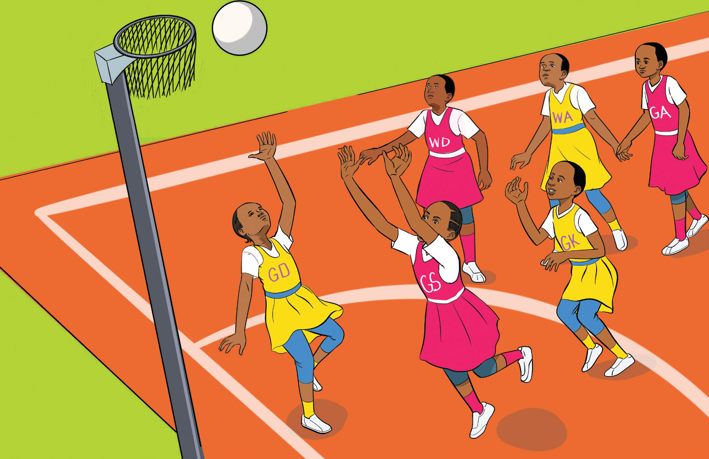

Team sports
Team sports are competitive physical activities in which individuals work together in groups as a team to achieve a common goal, as shown in Figure 1.3. For example, football, netball, volleyball, field hockey, cricket and a swimming relay.

Functions of sports
Apart from its positive impact on physical, psychological, cognitive, and emotional well-being, sports also influence various dimensions of human life including social, cultural, political, and economic aspects. The following are some of the functions of sports:
SPORTS STUDIES FORM ONE.indd 6
05/12/2024 13:17:32